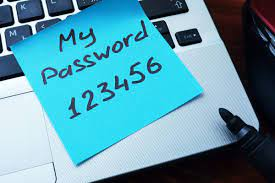
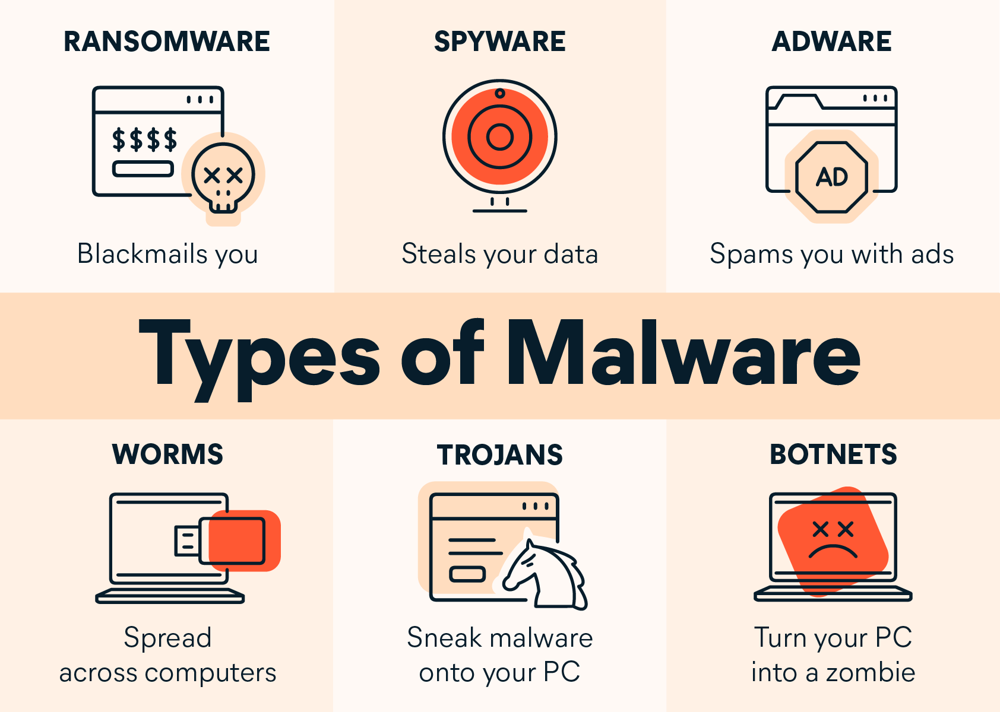

Hoe worden wij bedreigd?
Onze digitale veiligheid wordt op diverse manieren bedreigd, waarbij aanvallers gebruikmaken van verschillende zwakheden om toegang te verkrijgen tot onze digitale gegevens. Architectuurzwakheden ontstaan door ontwerpfouten in systeemlagen of de communicatie daartussen. Voorbeelden hiervan zijn ongeautoriseerd gebruik van camera's op telefoons en lekken in websites of apps. Een specifiek voorbeeld van zo'n zwakte is SQL-injectie, waarbij een kwaadwillende de databasequery van een app manipuleert om onbedoelde gegevensacties uit te voeren. Het is van cruciaal belang om databaseverbindingen goed te beveiligen en gebruikersinvoer te filteren. Deze zwakheden kunnen proactief worden aangepakt door ze te identificeren en op te lossen voordat ze worden misbruikt, vaak met behulp van ethische hackers. Apparaten zijn tegenwoordig via internet met elkaar verbonden en communiceren doorgaans op een veilige manier. Normaal gesproken ben je direct verbonden met de server, maar bij een man-in-the-middle aanval zit er iemand tussen die de verbinding manipuleert, waardoor toegang tot je gegevens mogelijk is. Vroeger kwam dit vaak voor bij openbare wifi-netwerken, waarbij al het verkeer via de hotspot van de aanvaller werd geleid.
hoe worden wij dan wel beveiligd
HTTPS-protocollen waarbij de 'S' staat voor secure, zorgen voor een veilige verbinding door middel van encryptie, waardoor gegevens minder kwetsbaar zijn voor man-in-the-middle aanvallen. In de hedendaagse digitale wereld maken vrijwel alle apps en websites gebruik van HTTPS, wat zelfs verplicht is geworden. Het gebruik van een SSL-certificaat is essentieel voor het opzetten van een HTTPS-protocol, waarbij deze certificaten de identiteit van de website bevestigen. Het aanwezige hangslotje in de adresbalk duidt op zo'n betrouwbaar certificaat, wat een belangrijk kenmerk is. Het wordt sterk aangeraden om dit te controleren alvorens persoonlijke gegevens in te voeren. HTTPS versleutelt de gegevens tussen de client en de server, maar het houdt in dat de server de oorspronkelijke gegevens kan zien. In tegenstelling hiermee maakt end-to-end encryptie het mogelijk om gegevens te versleutelen voordat ze online worden verzonden, en pas te ontsleutelen wanneer ze de internetomgeving verlaten. Hierdoor kunnen alleen de beoogde ontvangers de informatie lezen. Deze benadering voorkomt dat hackers toegang krijgen tot onversleutelde gegevens, zelfs als ze toegang hebben tot de server.De meest voorkomende fout en hoe we die voorkomen
Mensen vormen vaak de zwakste schakel in digitale veiligheid, met name als het gaat om het beheer van wachtwoorden. Het gebruik van eenvoudige wachtwoorden, zoals 'Welkom123' of iemands voornaam, maakt deze kwetsbaar voor aanvallen, zoals de bekende 'brute force'-aanval, waarbij een aanvaller elke mogelijke combinatie probeert om toegang te verkrijgen tot een account. Om jezelf te beschermen tegen dergelijke bedreigingen, is het cruciaal om sterke, complexe wachtwoorden te hanteren. Dit impliceert het kiezen van wachtwoorden die een combinatie zijn van letters, cijfers en speciale tekens. Het is eveneens belangrijk om voor elke website of dienst een uniek wachtwoord te gebruiken. Bovendien is het raadzaam om je wachtwoorden regelmatig te wijzigen, bij voorkeur minstens één keer per jaar. Het gebruik van 'geheime vragen' als methode voor wachtwoordherstel dient met voorzichtigheid te gebeuren, aangezien veel antwoorden gemakkelijk te achterhalen zijn via sociale media-profielen. Het is daarom verstandiger om deze functie te vermijden. Een handige tool in dit kader is een wachtwoordmanager. Deze slaat al je wachtwoorden veilig op, waardoor je slechts één sterk wachtwoord hoeft te onthouden. Bovendien kan het automatisch de juiste inloggegevens invullen op websites, sterke wachtwoorden genereren voor nieuwe accounts en zelfs toegang verlenen aan een vertrouwde persoon. Dit vergemakkelijkt het beheer van wachtwoorden en verhoogt de algehele beveiliging van je online accounts. Criminelen, beveiligingsbedrijven en overheden spelen een rol in deze dynamiek.
andere vormen die gebruikt worden om jouw gegevens te bemachtigen
Social engineering is een methode waarbij aanvallers psychologische trucs gebruiken om mensen te manipuleren en gegevens of wachtwoorden te verkrijgen. Aanvallen kunnen via telefoon of e-mail plaatsvinden en zijn vaak moeilijk te herkennen. Hackers gebruiken diverse psychologische technieken, zoals telefoonfraude of smishing. Malware is kwaadaardige software, waaronder Trojaanse paarden, virussen, wormen, spyware, adware en ransomware. Ze worden vaak gebruikt in aanvallen via zero day kwetsbaarheden, onbekende zwakke plekken in software zonder beschikbare oplossing. Een Trojan horse verbergt kwaadaardige code in een ogenschijnlijk onschuldig bestand of programma. Wanneer geopend, wordt de Trojan horse geactiveerd. Ze verspreiden zich via gebruikers, vaak onbewust, via e-mailbijlagen, chatberichten of downloads. Een worm verspreidt zich automatisch door computernetwerken en het internet, vaak zonder menselijke interactie. Sommige wormen infecteren systemen en verbruiken netwerkcapaciteit, wat negatieve invloed heeft op computernetwerken. Een virus infecteert bestaande software en veroorzaakt schade tijdens verspreiding. Het nestelt zich in uitvoerbare bestanden en verspreidt zich naar andere computers. Spyware verzamelt informatie over computergebruik en stuurt het naar de maker, terwijl adware zich richt op het tonen van advertenties op de computer. Ransomware dringt systemen binnen, versleutelt bestanden en vraagt om losgeld voor toegang tot de versleutelde bestanden. Het wordt afgeraden om te betalen, omdat er geen garantie is voor herstel. Tijdsdruk wordt vaak gebruikt bij ransomware-aanvallen. Onderzoekers ontdekken echter steeds vaker fouten in ransomware, waardoor slachtoffers hun bestanden kunnen terugkrijgen zonder te betalen.